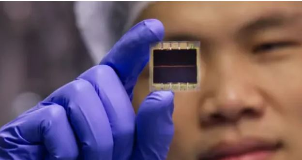
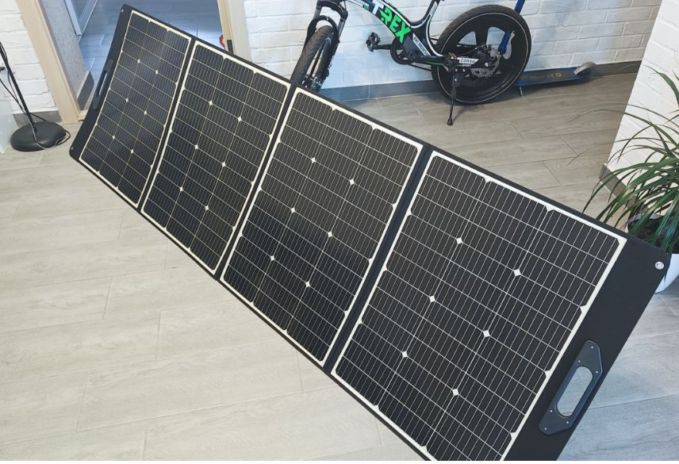
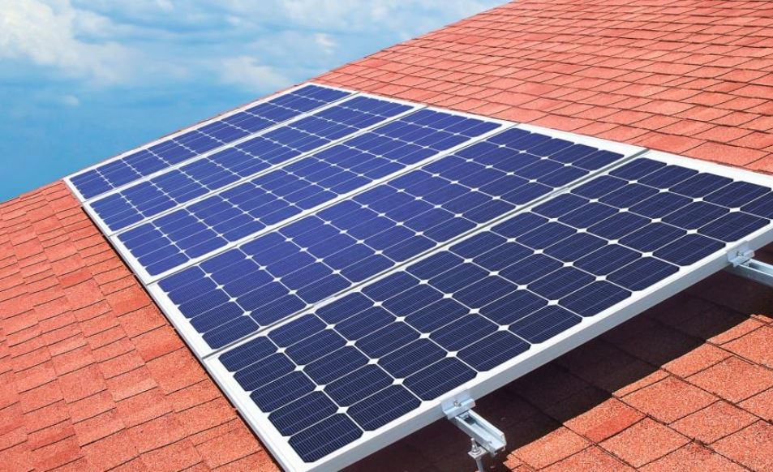

Старі вітряки можуть виробляти на 30% більше енергії: завдяки чому це можливо
Дізнайтеся, як старі вітряки можуть збільшувати продуктивність енергії завдяки новим технологіям.
Читати даліСонячні панелі на будь-якій поверхні: новий світлопоглинаючий матеріал в 150 разів тоньше кремнієвої пластини
Дізнайтеся більше про новий світловідбивний матеріал, який змінить підхід до сонячних панелей.
Читати даліОгляд 2E PSPLW300: портативна сонячна панель на 300 Вт у зручному формфакторі
Дізнайтеся про характеристики та переваги портативної сонячної панелі 2E PSPLW300.
Читати даліЧи вигідно встановлювати сонячну батарею на балконі і чи "поповнить" вона квартиру електроенергією
Дізнайтеся, чи вигідно встановлення сонячної батареї на вашому балконі та як це може вплинути на споживання електроенергії у вашій квартирі.
Читати далі